00 Khung bốn tiết ngày 30/09
Đã học 34/50 câu: dữ liệu 4, CPU 10, tập lệnh 10, hợp ngữ 10.
| Phút | Việc trên lớp | Cụm cần chắc |
|---|---|---|
| 0–20 | Ôn chỗ hay nhầm ở chương 1–3 | Endian, IAS, CF với OF, pipeline và thông lượng |
| 20–70 | Logic, dịch, Jcc, LOOP | Mặt nạ bit, nhảy có dấu và không dấu, một vết LOOP |
| 70–130 | INT 21h và vết chương trình | Hàm 01h, 02h, 09h, 4Ch; đọc AX, BX, CX sau một đoạn |
| 130–160 | Sáu cấu trúc C, CALL, bài trên lớp | IF/ELSE, WHILE, PROC; phát phiếu về nhà và Thực hành 2 |
Bốn tiết khoảng 180 phút.
01 Máy tính và dữ liệu
Chữ và số dùng suốt buổi
Một byte có tám bit. Bit trái cùng có trọng số 128.
Một chữ số hex là đúng bốn bit. A là mười, F là mười lăm.
0000
Chữ 0 là bốn bit 0000. Hai chữ hex ghép thành một byte.
2000h
Địa chỉ chỉ ngăn nào. Nội dung là số trong ngăn.
| Chức năng | ||||||||||||||||||||||||||||||||||||||||||||||||||||||||||||||||||||||||||||||||||||||||||||||||||||||||||||||||||||||||||||||||||||||||||||||||||||||||||||||||||||||||||||||||||||||||||||||||||||||||||||||||||||||||||||||||||||||||||||||||||
|---|---|---|---|---|---|---|---|---|---|---|---|---|---|---|---|---|---|---|---|---|---|---|---|---|---|---|---|---|---|---|---|---|---|---|---|---|---|---|---|---|---|---|---|---|---|---|---|---|---|---|---|---|---|---|---|---|---|---|---|---|---|---|---|---|---|---|---|---|---|---|---|---|---|---|---|---|---|---|---|---|---|---|---|---|---|---|---|---|---|---|---|---|---|---|---|---|---|---|---|---|---|---|---|---|---|---|---|---|---|---|---|---|---|---|---|---|---|---|---|---|---|---|---|---|---|---|---|---|---|---|---|---|---|---|---|---|---|---|---|---|---|---|---|---|---|---|---|---|---|---|---|---|---|---|---|---|---|---|---|---|---|---|---|---|---|---|---|---|---|---|---|---|---|---|---|---|---|---|---|---|---|---|---|---|---|---|---|---|---|---|---|---|---|---|---|---|---|---|---|---|---|---|---|---|---|---|---|---|---|---|---|---|---|---|---|---|---|---|---|---|---|---|---|---|---|---|---|---|---|---|---|---|---|---|---|---|---|---|---|---|---|---|
| Chức năng | Việc cụ thể | Thành phần đảm nhận |
|---|---|---|
| Lưu trữ | Giữ lệnh và dữ liệu để dùng lại | Hệ thống nhớ: RAM, ROM, thanh ghi |
| Xử lý | Tính toán và ra quyết định trên dữ liệu | Bộ xử lý, chủ yếu là ALU |
| Trao đổi | Đưa dữ liệu vào và đưa kết quả ra | Hệ thống vào–ra: bàn phím, màn hình, đĩa |
| Điều khiển | Quyết định bước nào chạy, tín hiệu nào bật | Khối điều khiển trong CPU |
Mỗi chức năng có một khối làm việc đó.
RAM giữ được số. ALU làm được phép tính. Bàn phím đưa số vào. Khối điều khiển chọn bước nào chạy.
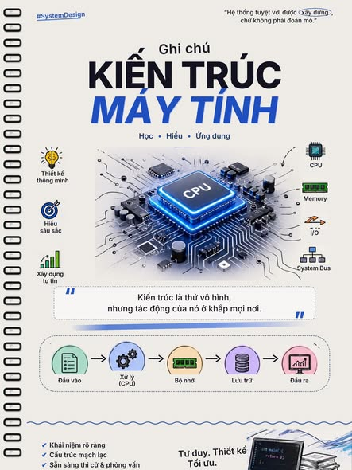
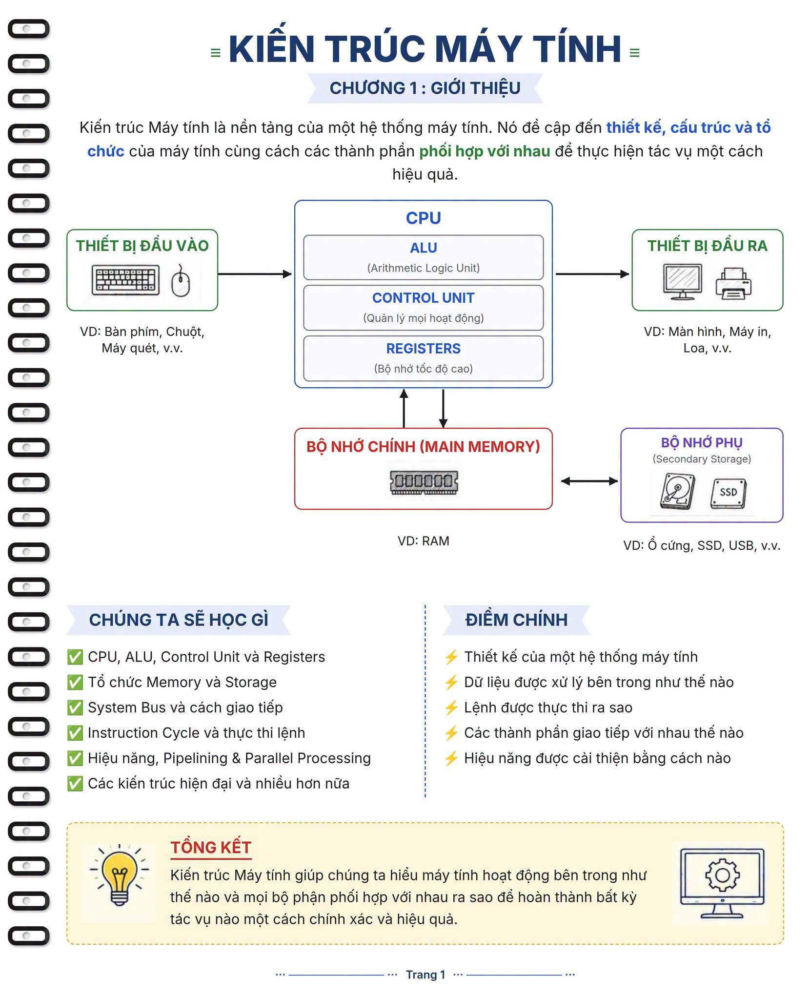
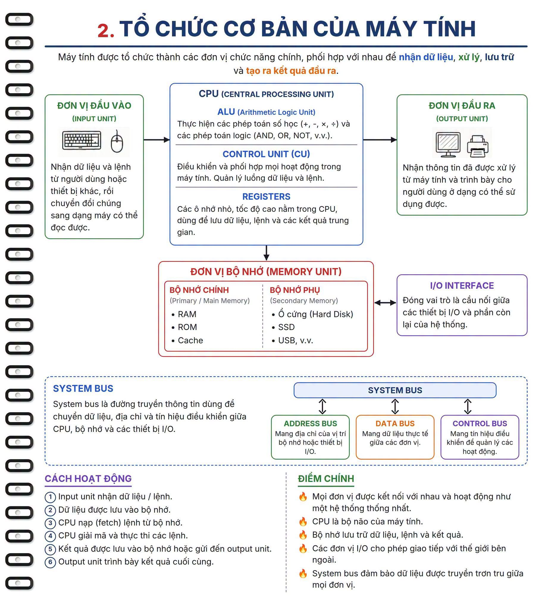
bốn khối
Bốn chức năng vẫn là lưu trữ, xử lý, trao đổi, điều khiển.
Chương trình lưu trữ
Chương trình là dãy bit nằm trong bộ nhớ, cạnh dữ liệu. PC giữ địa chỉ lệnh sắp lấy.
Lệnh và dữ liệu có thể đi chung một đường, hoặc đi hai đường.
Một bus thì một nhịp chỉ chở được lệnh hoặc dữ liệu. Hai bus thì lấy lệnh và đọc dữ liệu cùng lúc.
Máy IAS: 20 bit, 256 mã lệnh, 7 thanh ghi
Từ IAS dài 40 bit, hai lệnh 20 bit: 8 bit mã, 12 bit địa chỉ. 256 mã, 4096 ô.
| Nửa trái, 20 bit, đưa vào IR | Nửa phải, 20 bit, đưa vào IBR | ||
|---|---|---|---|
| Mã lệnh, 8 bit | Địa chỉ, 12 bit | Mã lệnh, 8 bit | Địa chỉ, 12 bit |
40 bit
Bảy thanh ghi IAS: AC, MQ, MBR, IBR, MAR, IR, PC.
Thứ tự byte
1234h có byte cao 12h và byte thấp 34h. 8086 để byte thấp ở địa chỉ nhỏ hơn.
Số 1234h gồm byte cao 12h và byte thấp 34h.
2000h34h
2001h12h
Đang là little endian: 34h ở địa chỉ thấp.
| Địa chỉ | Little endian, như 8086 | Big endian |
|---|---|---|
| 2000h | 34h, byte thấp của 1234h | 12h, byte cao |
| 2001h | 12h, byte cao | 34h, byte thấp |
Số âm viết bằng bit
Bit trái là bit dấu. Số âm: đảo mọi bit, rồi cộng 1. Một byte có dấu chạy từ −128 đến 127.
Mẫu 11101110 có bit trái bằng 1. Đảo bit rồi cộng 1 ra 18, nên mẫu này là −18.
Mẫu gốc 11101110. Bit trái bằng 1.
Ngắt
cất rồi mới nhảy
Cất địa chỉ trở về trước khi nhảy.
02 CPU và hiệu năng
Một lệnh đi qua bốn bước. PC tăng ngay khi vừa nạp, để còn địa chỉ quay về nếu lệnh là lời gọi.
PC đang giữ 0100h. Ô đó chứa lệnh ADD AX, BX.
NạpGiải mãThực hiệnCất
PC = 0100h · IR = trống
PC giữ địa chỉ. IR giữ lệnh. Hai thanh này không đổi vai cho nhau.
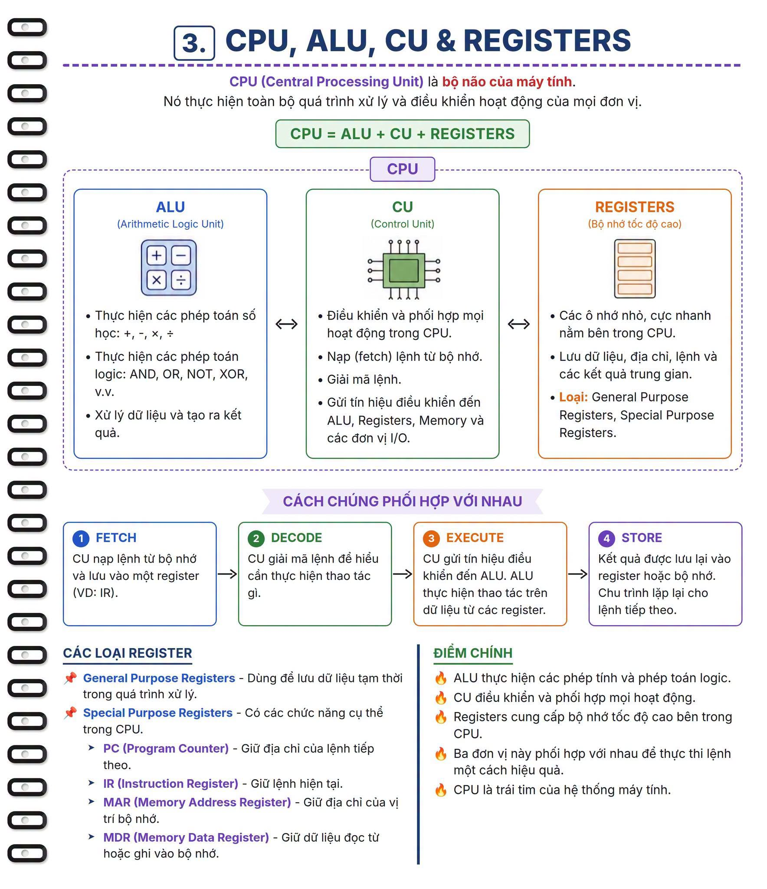
PC giữ địa chỉ
MDR trên hình làm việc của MBR. IBR chỉ IAS mới có.
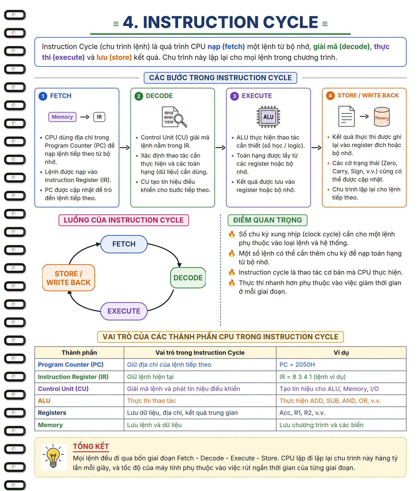
CF và OF
CF là nhớ của số không dấu. OF là tràn của số có dấu.
11110000 + 00110000 = 1 00100000
11110000 + 00110000. Bit nhớ và tràn dấu là hai việc.
Bit nhớ: ?
CF: ?
OF: ?
240 + 48 vượt 255. −16 + 48 vẫn nằm trong −128 đến 127.
Máy chạy hết bao lâu, và MIPS
CPI = tổng (tỉ lệ của lớp lệnh × CPI của lớp đó)
T = IC × CPI / f
MIPS = f / (CPI × 106)
IC = 2×106, f = 1 GHz, 60% CPI = 1, 40% CPI = 4.
CPI
CPI trung bình trước, thời gian T sau, MIPS cuối cùng.
03 Tập lệnh và pipeline
MOV
Hợp ngữ viết lệnh bằng chữ. Assembler đổi chữ đó thành bit. IAS viết một địa chỉ, nguồn còn lại ở AC.
8086 chỉ vào một ô nhớ bằng bốn cách
| Chế độ | Địa chỉ hiệu dụng | Dòng phân biệt |
|---|---|---|
| Gián tiếp thanh ghi | Nội dung của một thanh ghi địa chỉ | MOV AX, [BX] |
| Tương đối cơ sở | BX hoặc BP cộng độ dời | MOV CX, [BX+10] |
| Tương đối chỉ số | SI hoặc DI cộng độ dời | MOV CX, [DI+5] |
| Tương đối cơ sở–chỉ số | BX hoặc BP, cộng SI hoặc DI, cộng độ dời | MOV BX, [BX+DI+10] |
BX = 2000h. Ô 2000h chứa 0034h. Ngoặc vuông là vào bộ nhớ.
AX = ?
Ngoặc vuông là vào bộ nhớ.
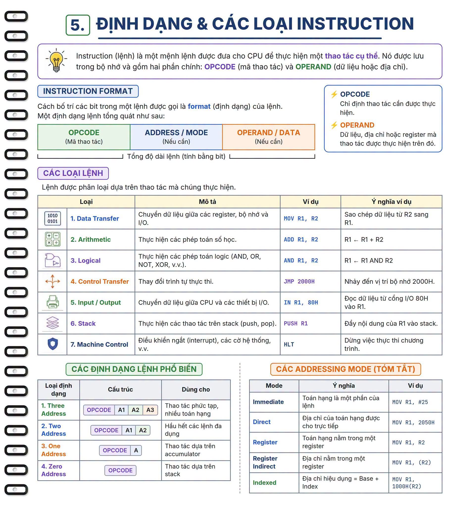
AX = AX + BX
Opcode nói làm phép gì. Toán hạng nói làm trên số nào. 8086 chủ yếu là lệnh hai địa chỉ.
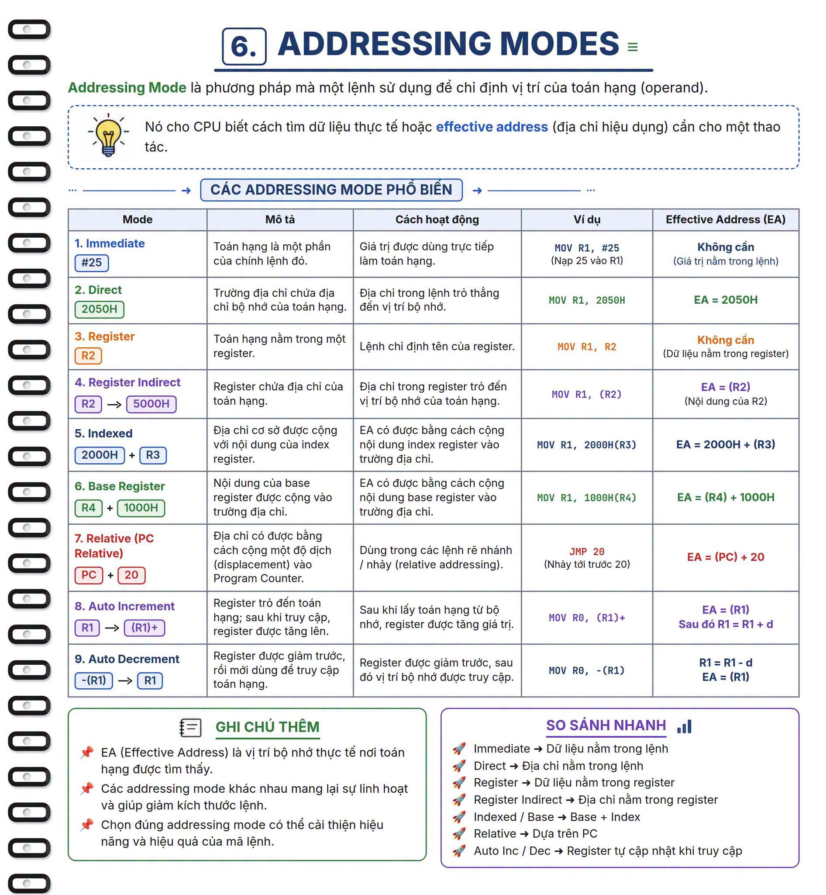
[BX+DI+10]
EA là offset của toán hạng. Ba cách 8086 đứng riêng: cơ sở, chỉ số, cơ sở–chỉ số. (R1)+ không phải cú pháp 8086.
Vài lệnh hay gặp
CMP không ghi
CMP sửa cờ và giữ nguyên hai toán hạng. INC của 8086 không sửa CF.
Pipeline
Nhiều lệnh đứng ở các đoạn khác nhau trong cùng một nhịp. Thông lượng tăng. Một lệnh đơn vẫn đi đủ các đoạn.
Tăng tốc = (n × k) / (n + k − 1)
Bảng sau vẽ k = 5 đoạn, đặt tên F, D, E, M, W, với n = 4 lệnh để nhìn thấy công thức trước khi thay số lớn. Hàng là lệnh, cột là nhịp.
Bốn lệnh, năm giai đoạn. Ô đậm là giai đoạn đang chạy trong nhịp đó.
Lệnh cuối ra ở nhịp 8. Tuần tự cùng bốn lệnh mất 20 nhịp.
| Lệnh | 1 | 2 | 3 | 4 | 5 | 6 | 7 | 8 |
|---|---|---|---|---|---|---|---|---|
| I1 | F | D | E | M | W | |||
| I2 | F | D | E | M | W | |||
| I3 | F | D | E | M | W | |||
| I4 | F | D | E | M | W |
8 nhịp
Không chờ: số nhịp = n + k − 1. Tăng tốc = n×k / (n + k − 1), trần bằng k.
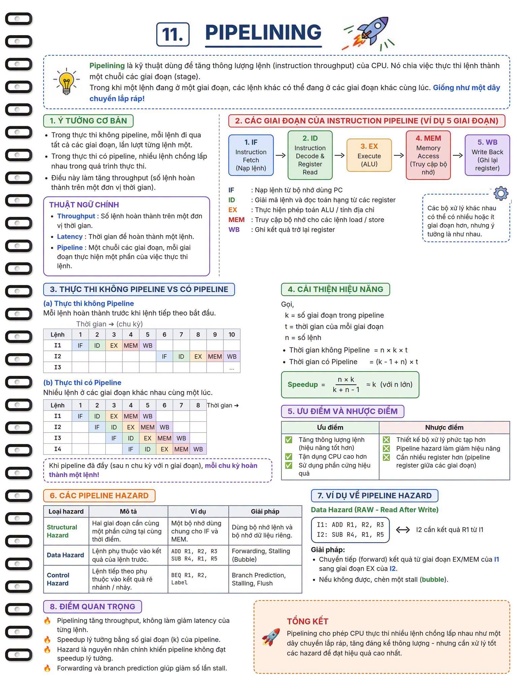
thông lượng
IF, ID, EX, MEM, WB cùng vai với F, D, E, M, W. Hình viết (k − 1 + n), cùng tổng n + k − 1. Công thức chỉ đúng khi không có nhịp chờ.
RISC và CISC
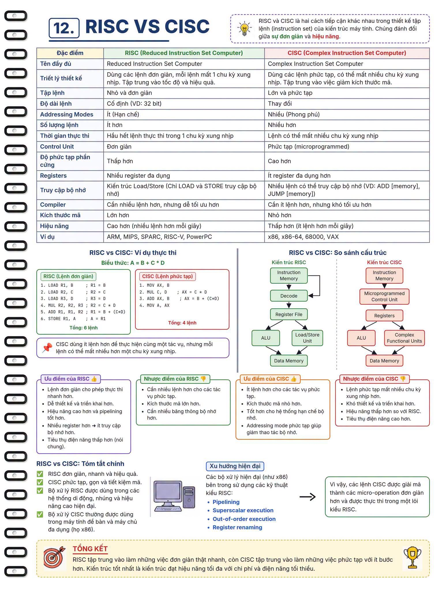
C, ×D, +B
A = B + C×D. Thứ tự đúng là lấy C, nhân D, cộng B, cất A. Dãy CISC in trên hình đang tính B×C+D. 8086 là CISC.
Xử lý song song và phân loại Flynn
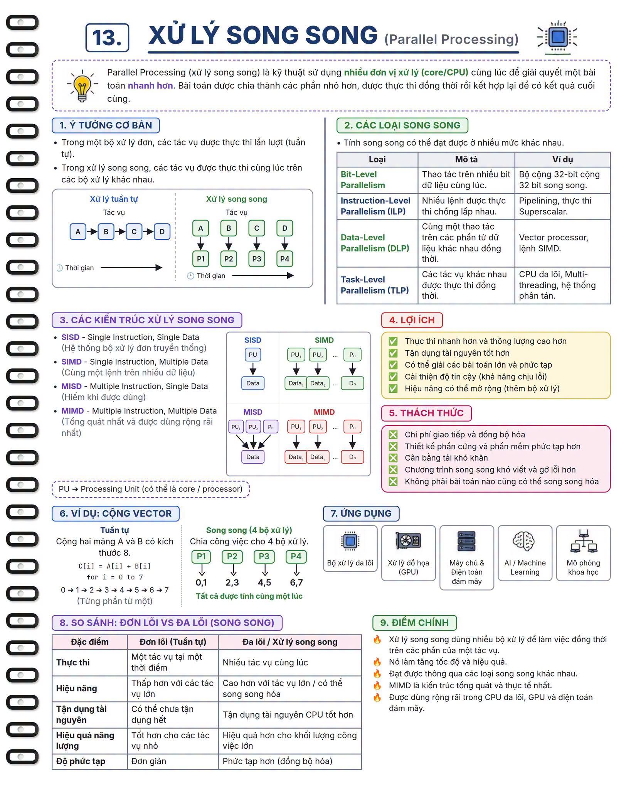
SISD
Pipeline là mức lệnh trong một CPU. Cùng một lệnh trên nhiều dữ liệu là SIMD. Nhiều bộ xử lý, mỗi bộ một chương trình, là MIMD.
04 Khối 8086 và thanh ghi
1 MiB
ALU xử lý 16 bit một lần. 20 bit địa chỉ chọn 1.048.576 byte, tức 1 MiB.
Địa chỉ vật lý 20 bit = (giá trị segment dịch trái 4 bit) + offset 16 bit
Nhân segment với 16, rồi cộng offset.
CS = 1A2Bh, IP = 0100h. Dịch trái bốn bit rồi cộng offset.
CS = 1A2Bh
Dịch trái thêm một chữ số 0 bên phải.
64 KiB
Một đoạn dài tối đa 64 KiB. Các đoạn có thể chồng nhau.
| Thanh ghi | Việc nó giữ |
|---|---|
| AX, gồm AH và AL | AH là byte cao, AL là byte thấp |
| BX | Thanh ghi cơ sở, được dùng trong địa chỉ nhớ |
| CX | Bộ đếm của LOOP và của các tiền tố lặp chuỗi |
| DX | Cổng vào–ra và nửa cao của tích |
| SI, DI | Chỉ số nguồn và đích |
| SP, BP | Đỉnh ngăn xếp và khung ngăn xếp. SS là đoạn ngăn xếp |
| CS, DS, ES, SS | Đoạn mã, dữ liệu, phụ và ngăn xếp. CS giữ đoạn chứa mã lệnh |
| IP | Offset của lệnh sắp lấy |
| FLAGS | CF, SF, OF là cờ kết quả; IF là cờ cho phép ngắt |
AH = 12h
AX = 1234h thì AH = 12h và AL = 34h. Tích 32 bit nằm ở DX:AX.
05 Dòng lệnh và khai báo
nhãn : lệnh
Một dòng có bốn vị trí: nhãn, lệnh, toán hạng, chú thích. DB không phải lệnh của CPU.
LAP: ADD AX, CX ; nhan, lenh, toan hang, chu thich
S DB "PTIT", 0Dh, 0Ah, "$"
N DW 100 DUP(?)
K EQU 2$ là byte 24h. Hàm 09h dừng trước byte này.
| Offset | 0100h | 0101h | 0102h | 0103h | 0104h | 0105h | 0106h |
|---|---|---|---|---|---|---|---|
| Nội dung | P | T | I | T | 0Dh | 0Ah | $ |
EXE gán DS qua AX.
MOV AX, @DATA
MOV DS, AX5450h
N DW 100 DUP(?) chiếm 200 byte. MOV DX, MSG của PTIT đọc 5450h, không phải offset.
06 Logic, nhảy và bốn vết
AND giữ bit 1
AND giữ bit ở cột mặt nạ bằng 1. TEST làm AND để lập cờ rồi bỏ kết quả.
Ví dụ giữ nibble thấp của AL = B4h bằng mặt nạ 0Fh:
| b7…b0 | Hex | |
|---|---|---|
| AL | 1011 0100 | B4h |
| Mặt nạ | 0000 1111 | 0Fh |
| AND | 0000 0100 | 04h |
AL = 1011 0100. Mặt nạ = 0000 1111. AND làm từng cột.
Dữ liệu 10110100
Mặt nạ 00001111
Kết quả --------
Cột mặt nạ bằng 0 thì bit dữ liệu thành 0. Cột mặt nạ bằng 1 thì bit dữ liệu được giữ.
10110100
SHL và SAL cùng mã trên 8086. SHR điền 0. SAR điền bit dấu.
AL = B4h. Tám lần SHL, BX đếm các lần CF = 0.
MOV CX, 8
XOR BX, BX
LAP: SHL AL, 1
JC BO
INC BX
BO: LOOP LAPAL 10110100 BX = 0
CF lần lượt 1, 0, 1, 1, 0, 1, 0, 0. BX kết thúc bằng 4. AL thành 0.
Nhảy có dấu và không dấu
FFh − 1
CMP lập cờ rồi bỏ hiệu. JA nhìn không dấu. JG nhìn có dấu.
AL = FFh vừa so với 1. Không dấu là 255. Có dấu là −1.
JA nhìn số không dấu. JG nhìn số có dấu.
Vết 1 — LOOP cộng dồn
MOV CX, 5
MOV AX, 0
LAP: ADD AX, CX
LOOP LAPn(n+1)/2
LOOP giảm CX rồi nhảy nếu CX khác 0. AX = n(n+1)/2.
| Sau lệnh | AX | CX | Việc vừa xảy ra |
|---|---|---|---|
MOV CX, 5 / MOV AX, 0 | 0000h | 0005h | Khởi tạo |
ADD rồi LOOP | 0005h | 0004h | Cộng 5, còn quay lại |
ADD rồi LOOP | 0009h | 0003h | Cộng 4 |
ADD rồi LOOP | 000Ch | 0002h | Cộng 3 |
ADD rồi LOOP | 000Eh | 0001h | Cộng 2 |
ADD rồi LOOP | 000Fh | 0000h | Cộng 1, CX = 0 thì dừng |
Vết 2 — CMP / JLE
MOV AX, 0
MOV CX, 3
LAP: ADD AX, CX
INC CX
CMP CX, 6
JLE LAPVòng cộng từ 3 đến 6. Số 6 vẫn được cộng vì INC đứng sau ADD.
| Lần | CX lúc cộng | AX sau ADD | CX sau INC | JLE |
|---|---|---|---|---|
| 1 | 3 | 3 | 4 | 4 ≤ 6, nhảy |
| 2 | 4 | 7 | 5 | nhảy |
| 3 | 5 | 12 | 6 | 6 ≤ 6, nhảy |
| 4 | 6 | 18 | 7 | 7 ≤ 6, rơi xuống |
Vết 3 — XOR mặt nạ
MOV AX, 3C3Ch
MOV BX, 0F0Fh
XOR AX, BX3333h
XOR AX, BX ghi AX. MUL byte ghi tích 16 bit vào cả AX.
Vết 4 — SUB, CMP, JG, NEG
MOV AX, 8
MOV BX, 20
SUB AX, BX
CMP AX, 0
JG DUONG
NEG AX
JMP TIEP
DUONG: ADD AX, 5
JMP XONG
TIEP: ADD AX, 30
XONG:AX = 8
8 trừ 20. JG không vào DUONG. NEG rồi cộng 30.
07 Ngắt 21h
INT 21h gọi DOS. Số trong AH chọn việc.
| AH | Việc | Thanh ghi đi kèm |
|---|---|---|
| 01h | Đọc một ký tự từ bàn phím, có hiện lại | Ký tự vào AL |
| 02h | In một ký tự | Mã ASCII đặt ở DL trước khi gọi |
| 09h | In một xâu | DX = offset xâu trong DS; xâu kết thúc bằng $, dấu này không được in |
| 4Ch | Kết thúc chương trình | AL là mã trả về. Cách viết gọn: MOV AX, 4C00h |
INT 21h làm việc nào là do số đang nằm trong AH.
AH chọn hàm. AL, DL và DX là chỗ đặt ký tự hoặc địa chỉ xâu.
LEA DX, BUFFER
MOV AH, 09h
INT 21h| Sau dòng | AH | DX | Ý nghĩa |
|---|---|---|---|
LEA DX, BUFFER | chưa đổi | offset của BUFFER | DX giữ địa chỉ, không giữ các chữ của xâu |
MOV AH, 09h | 09h | giữ nguyên | Chọn hàm in xâu. AL không tham gia việc chọn hàm |
INT 21h | 09h | giữ nguyên | DOS đọc DS:DX cho đến trước dấu $ rồi hiện lên màn hình |
Enter, mã 0Dh, bị so trước khi tăng CX nên không được đếm.
MOV CX, 0
MOV AH, 01h
DOC: INT 21h
CMP AL, 0Dh
JE XONG
INC CX
JMP DOC
XONG:Mã 45 là một ký tự. Mã của chữ số 4 là 34h, tức 52.
Hàm 02h in đúng một ký tự có mã đang nằm trong DL.
byte 0 = max
Hàm 0Ah: DX trỏ byte sức chứa. Hàm 0Bh chỉ báo có phím, không lấy phím ra. INT 10h hàm 0Eh in ký tự trong AL, không cần dấu $.
08 Ngăn xếp, thủ tục và macro
PUSH giảm SP đi 2. POP tăng SP lên 2. Từ đẩy sau được lấy trước.
Đĩa đặt sau nằm trên. Lấy ra theo thứ tự ngược với lúc đẩy.
AX = 1111h
BX = 2222h
CX = 3333h
Ngăn xếp đang trống. SP sẽ giảm 2 mỗi lần đẩy một từ.
CALL gần đẩy IP của lệnh kế rồi mới ghi IP. JMP không đẩy.
Lệnh kế sau lời gọi nằm ở 0106h. Thủ tục nằm ở 0200h.
IP = 0103h · ngăn xếp trống
JMP đổi IP. CALL đổi IP và còn cất địa chỉ của lệnh kế.
NEAR = IP
NEAR chỉ cất IP. FAR cất CS và IP. Macro chèn chữ lúc dịch, không có CALL.
09 Sáu cấu trúc điều khiển
8086 không có chữ if. Mỗi cấu trúc là CMP, một lệnh nhảy, và đôi khi một JMP để khỏi rơi sang nhánh bên.
Mỗi cấu trúc là một cách đặt CMP và lệnh nhảy.
JLE nhảy qua lệnh cần bảo vệ. JMP ra khỏi nhánh then để khỏi rơi vào else.
IF, không có nhánh else
Chỉ cộng khi AX > 0. So sánh có dấu.
CMP AX, 0
JLE BOQUA
ADD BX, AX
BOQUA:IF-ELSE
CX = 1 khi AX > BX, so sánh có dấu. Mỗi nhánh có một JMP ra ngoài.
CMP AX, BX
JLE NHO
MOV CX, 1
JMP XONG
NHO:
MOV CX, 0
XONG:SWITCH
Ba nhánh theo ký tự trong AL. Mỗi nhánh JMP tới XONG.
CMP AL, '1'
JE MOT
CMP AL, '2'
JE HAI
JMP KHAC
MOT:
MOV BL, 1
JMP XONG
HAI:
MOV BL, 2
JMP XONG
KHAC:
MOV BL, 0
XONG:FOR, lặp đủ một số lần đã biết
CX đếm ngược. LOOP giảm CX rồi quay lại nếu CX khác 0.
MOV CX, 4
MOV AX, 0
LAP:
ADD AX, CX
LOOP LAPWHILE, kiểm tra trước khi vào thân
BX = 0 thì thân không chạy.
LAP:
CMP BX, 0
JLE XONG
ADD AX, 2
DEC BX
JMP LAP
XONG:DO-WHILE, thân chạy rồi mới xét
Thân chạy một lần rồi mới CMP. BX = 0 vẫn bị cộng một lần.
LAP:
ADD AX, 2
DEC BX
CMP BX, 0
JG LAP10 Bộ nhớ và cache
Buổi 9 giảng cache. Hai hình dưới tính số đường địa chỉ, hit, miss và ba cách đặt khối.
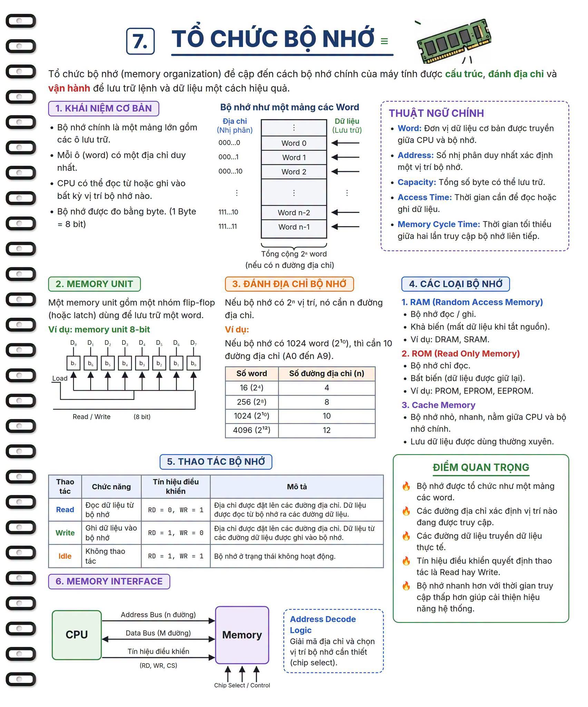
2ⁿ ô
n đường địa chỉ chọn 2 mũ n ô. 8086 có 20 đường, mỗi ô một byte, ra 1 MiB.
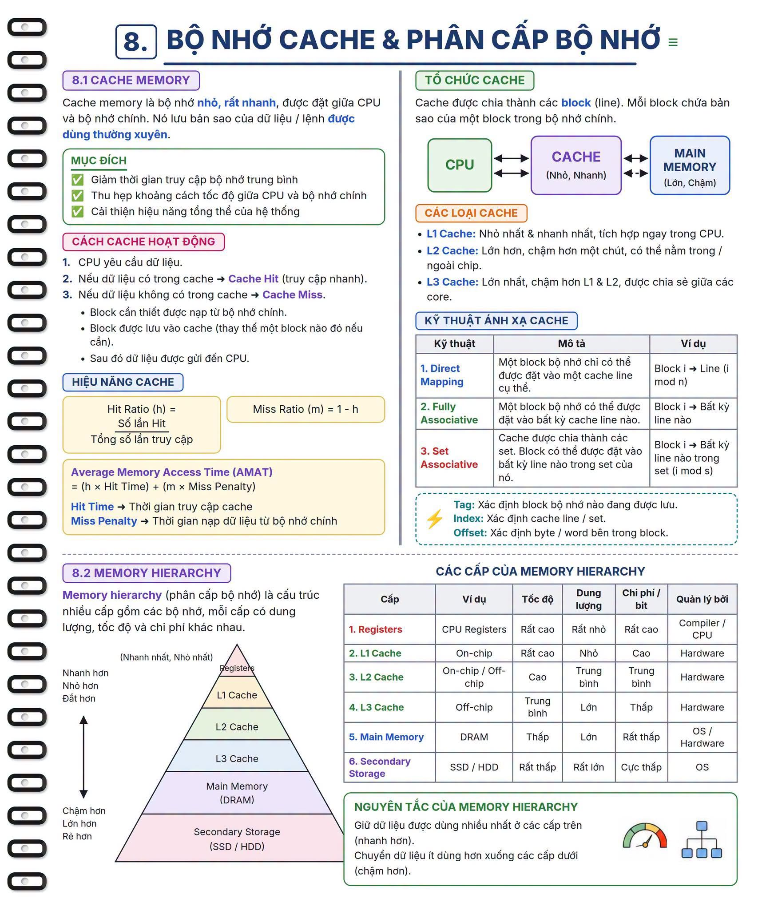
Hit là khối đã nằm trong cache. Làm theo đúng công thức đang in trong bài.
Hit time 2 ns. Miss rate 5%. Miss penalty 100 ns.
Hình 09: 0,95×2 + 0,05×100 = 6,9 ns. Hình 16: 2 + 0,05×100 = 7 ns.
tag + index + offset
Trực tiếp: line = số khối chia dư cho số line. Cache không làm tăng dung lượng DRAM.
11 Tổ chức vào–ra
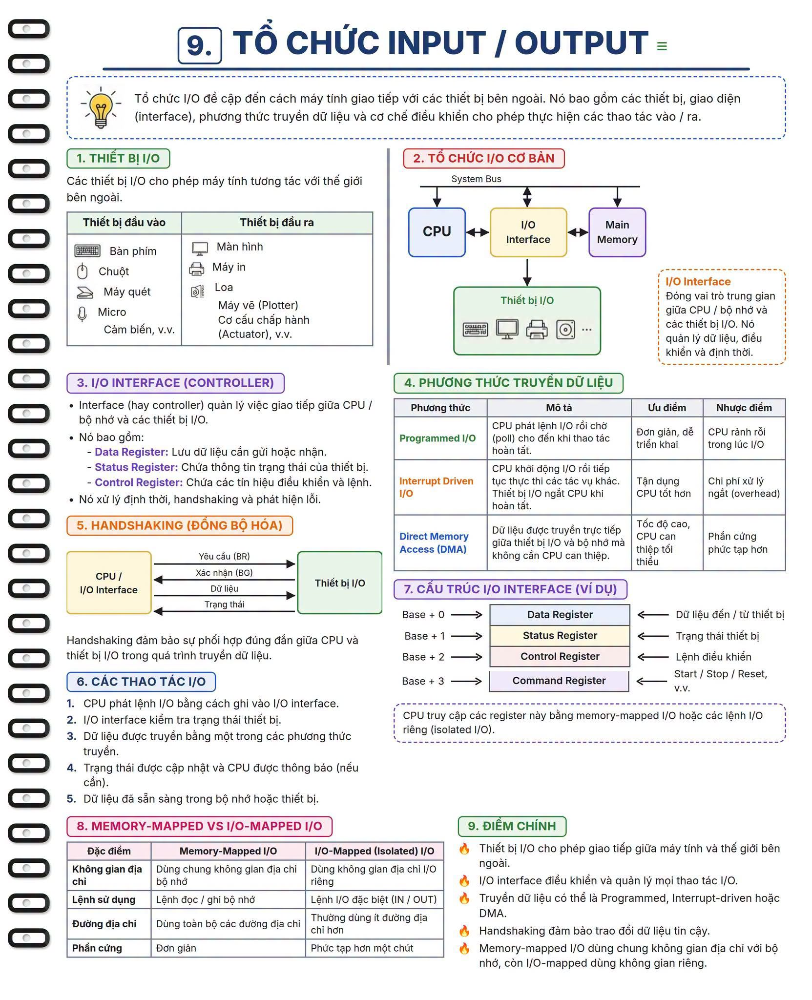
data, status, control
Giữa thiết bị và CPU là mạch giao tiếp, với thanh ghi dữ liệu, trạng thái và điều khiển.
Ba cách đưa một khối dữ liệu giữa thiết bị và bộ nhớ.
Hỏi vòng thì CPU bận suốt lúc chờ. Ngắt thì CPU làm việc khác. DMA chuyển cả khối, CPU không chuyển từng byte.
cổng 60h
8086 dùng IN và OUT. IN AL, 60h đọc cổng 60h, không phải ô nhớ 60h.
12 Bus hệ thống
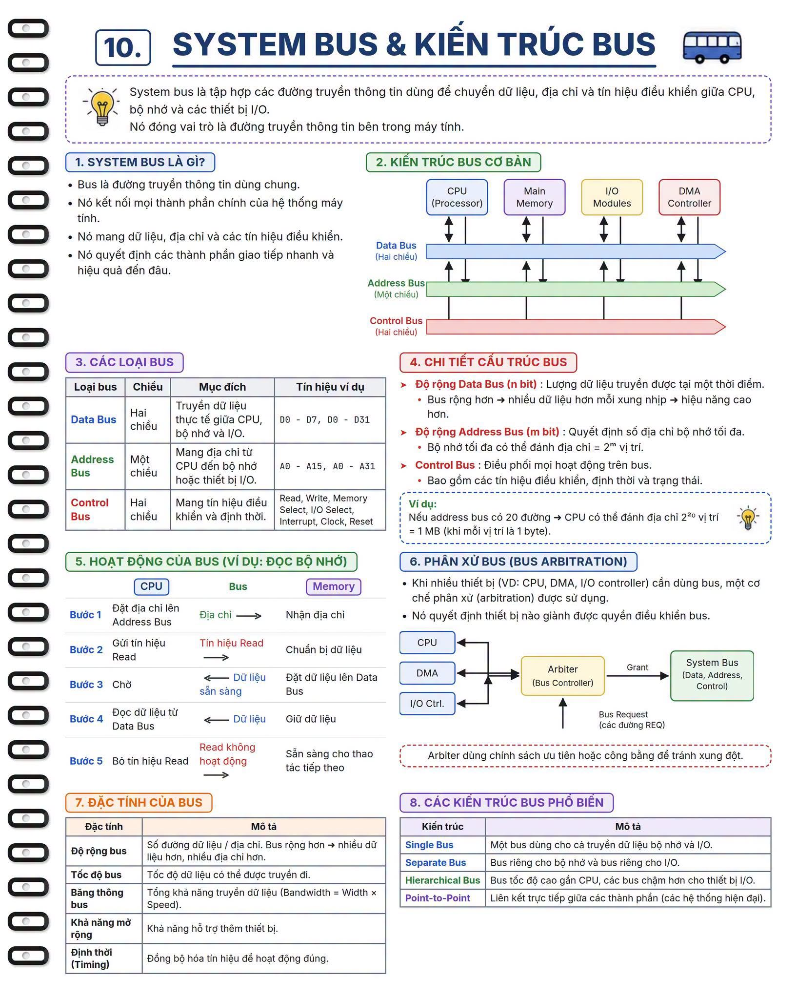
20 đường địa chỉ chọn 1 MiB. 16 đường dữ liệu chuyển hai byte mỗi lần.
8086 có 20 đường địa chỉ và 16 đường dữ liệu.
Địa chỉ chọn ô nào. Dữ liệu mang nội dung ô đó. Điều khiển nói đang đọc hay đang ghi.
địa chỉ, rồi Read
Đọc: đặt địa chỉ, bật Read, nhớ đưa dữ liệu, CPU lấy, tắt Read. Một bus dùng chung là nút thắt von Neumann.
13 Các bài tính in trên hình
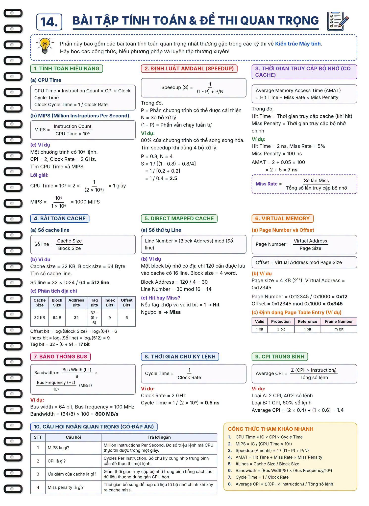
1 s
T = IC × CPI / f. Amdahl và pipeline là hai công thức tăng tốc khác nhau. Câu cache dùng tag, index, offset. Câu trang dùng số trang và offset trong trang.
14 Tờ ôn mười lăm ô
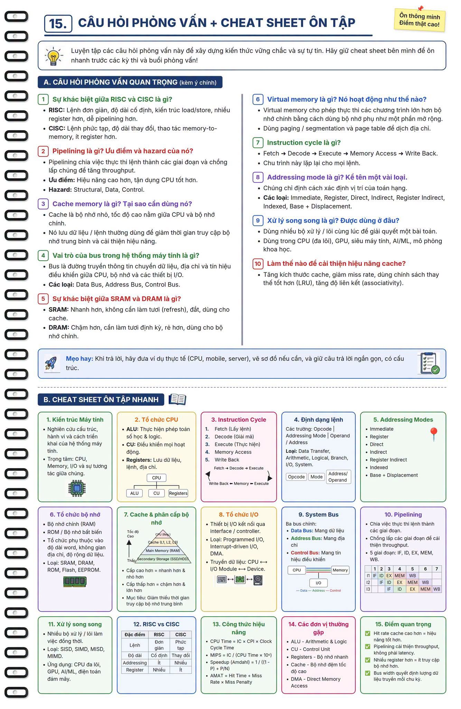
thiếu cơ sở–chỉ số
Ô địa chỉ trên tờ thiếu cơ sở–chỉ số. x86 vẫn là CISC ở mức tập lệnh. Hai công thức cache cho 7 ns và 6,9 ns.
15 Bài tập trên lớp
Sáu bài dùng chung một bộ số cho cả phòng. Viết vào phiếu Word. Lời giải để đóng trong lúc làm; mở từng bài sau khi đã có kết quả trên giấy, hoặc bấm Hiện lời giải khi chữa chung.
TL1. Endian và bù hai
Từ 5A3Ch ghi tại 1000h trên 8086. Byte tại 1000h và tại 1001h là gì? Mẫu 8 bit 11100110, đọc theo bù hai, bằng bao nhiêu? Cùng mẫu đó đọc không dấu bằng bao nhiêu?
Lời giải TL1
8086 là little endian: byte trọng số thấp ở địa chỉ thấp. 5A3Ch tách thành byte thấp 3Ch và byte cao 5Ah. Ô 1000h giữ 3Ch, ô 1001h giữ 5Ah.
11100110b không dấu = 128 + 64 + 32 + 4 + 2 = 230. Bit dấu bằng 1 nên giá trị bù hai = 230 − 256 = −26. Kiểm tra bằng đảo bit: đảo 11100110 được 00011001 = 25, cộng 1 được 26, vậy mẫu là −26.
TL2. CPI, thời gian, MIPS
f = 2 GHz, IC = 4×106. 50% chỉ thị CPI = 1, 30% CPI = 2, 20% CPI = 5. Tính CPI, thời gian CPU theo ms, và MIPS.
Lời giải TL2
CPI = 0,50×1 + 0,30×2 + 0,20×5 = 0,5 + 0,6 + 1,0 = 2,1.
T = IC × CPI / f = 4×106 × 2,1 / (2×109) = 4,2×10−3 s = 4,2 ms.
MIPS = f / (CPI × 106) = 2×109 / (2,1×106) = 2000 / 2,1 = 952,4.
TL3. Chế độ địa chỉ
BX = 1500h, DI = 0020h. Gọi tên chế độ và ghi offset của toán hạng nguồn: MOV AX, [BX]; MOV AX, [BX+6]; MOV AX, [DI+6]; MOV AX, [BX+DI+6].
Lời giải TL3
[BX] là gián tiếp qua thanh ghi, offset 1500h. [BX+6] là dựa trên nền (based), offset 1506h. [DI+6] là chỉ số (indexed), offset 0026h. [BX+DI+6] là nền kết hợp chỉ số (based-indexed), offset 1500h + 0020h + 6 = 1526h. Cả bốn lệnh đều đọc nhớ; giá trị nạp vào AX là nội dung tại offset đó trong đoạn DS, không phải chính cái offset.
TL4. JA và JG
AL = 80h. Thực hiện CMP AL, 1. Xác định CF, ZF, SF, OF. JA có nhảy không? JG có nhảy không? AL còn bằng bao nhiêu?
Lời giải TL4
80h không dấu = 128, có dấu = −128. Phép giả của CMP là 80h − 1 = 7Fh. Không mượn vì 128 > 1, nên CF = 0. Kết quả khác 0, ZF = 0. Bit 7 của 7Fh bằng 0, SF = 0. Có dấu: −128 − 1 = −129, nằm ngoài −128..127, nên OF = 1.
JA cần CF = 0 và ZF = 0, cả hai đều đúng, nên JA nhảy. JG cần ZF = 0 và SF = OF. ZF = 0 nhưng SF = 0 khác OF = 1, nên JG không nhảy. CMP không ghi AL, AL vẫn 80h.
TL5. Vết LOOP
MOV AX, 0
MOV CX, 6
LAP:
ADD AX, CX
LOOP LAPLời giải TL5
ADD nhìn CX trước khi LOOP giảm. Các số được cộng là 6, 5, 4, 3, 2, 1. AX = 21. CX cuối = 0. Công thức n(n+1)/2 với n = 6 cho cùng 21, vì n ở đây chính là CX ban đầu.
TL6. IF-ELSE có dấu
Dịch: nếu AX > BX thì CX = 1, ngược lại CX = 0. So sánh có dấu.
Lời giải TL6
CMP AX, BX
JLE NHO
MOV CX, 1
JMP XONG
NHO:
MOV CX, 0
XONG:JLE gom cả trường hợp bằng, đúng với điều kiện lớn hơn nghiêm ngặt. Đảo cấu trúc bằng JG LON rồi gán CX = 0 ở nhánh rơi xuống cũng đúng, miễn là mỗi nhánh có đường thoát riêng và CX không bị ghi hai lần.
16 Bài tập về nhà
N là hai chữ số cuối MSSV, từ 0 đến 99. K là chữ số tận cùng, từ 0 đến 9. MSSV kết thúc bằng 27 thì N = 27 và K = 7; đó là cách đọc, mỗi người thay số của mình. Làm vào phiếu Word. Hạn nộp: đầu buổi 9, ngày 07/10/2026. File đặt tên MSSV-BTVN-Buoi08.
Bài 1 (2 điểm). X = −(40 + K), biểu diễn 8 bit. Viết |X| nhị phân, mã bù 1, mã bù 2, dạng hex, và giá trị không dấu của cùng mẫu bit.
Bài 2 (2 điểm). f = 1 GHz, IC = (3 + K)×106. 50% CPI = 1, 30% CPI = 3, 20% CPI = (2 + K). Tính CPI, thời gian CPU theo ms, và MIPS.
Bài 3 (2 điểm). CS = 1A00h + N×10h, IP = 0200h + 2×K. Tính CS, CS dịch trái 4 bit, địa chỉ vật lý, địa chỉ đầu đoạn và cuối đoạn. Nêu kích thước tối đa của một đoạn.
Bài 4 (2 điểm). AX = 0, CX = 3 + K, rồi lặp ADD AX, CX và LOOP. Tìm dãy số được cộng, AX và CX lúc dừng, và nói LOOP có đọc cờ hay không.
Bài 5 (1 điểm). Dịch có dấu: nếu AX ≥ 10 thì CX = AX, ngược lại CX = 10. Nói rõ nhánh nào chạy khi AX = 10.
Bài 6 (1 điểm). In xâu MSG DB "PTIT", 0Dh, 0Ah, "$" bằng INT 21h rồi thoát với mã 0. Giải thích LEA. Sau đó AX = 00A0h + K, BX = 00B0h + K, thực hiện PUSH AX, PUSH BX, POP AX: tìm AX, nói BX có đổi không, và SP đổi bao nhiêu byte.
Công thức chấm — mở sau khi đã giao đề
Bài 1. |X| = 40 + K. Mã bù 2 8 bit, đọc không dấu, bằng 256 − (40 + K). Dạng hex là byte đó. Ví dụ chấm khi K = 7, không phải đề chung: |X| = 47 = 00101111b, bù 1 = 11010000b, bù 2 = 11010001b = D1h, không dấu = 209.
Bài 2. CPI = 0,50×1 + 0,30×3 + 0,20×(2 + K) = 1,8 + 0,2K. T (ms) = (3 + K) × CPI, vì IC / f = (3 + K)×106 / 109 = (3 + K)×10−3 giây và 10−3 giây chính là 1 ms. MIPS = 1000 / CPI. K = 0 thì CPI = 1,8, T = 5,4 ms, MIPS = 555,6. K = 7 thì CPI = 3,2, IC = 10×106, T = 32 ms, MIPS = 312,5.
Bài 3. CS = 1A00h + N×10h. Dịch trái 4 bit là viết thêm một chữ số hex 0. Địa chỉ vật lý = CS đã dịch + IP, với IP = 0200h + 2K. Đầu đoạn = CS đã dịch. Cuối đoạn = đầu đoạn + FFFFh. Một đoạn dài tối đa 64 KiB. Ví dụ chấm N = 27, K = 7: 27×10h = 01B0h, CS = 1BB0h, dịch = 1BB00h, IP = 020Eh, địa chỉ vật lý = 1BD0Eh, cuối đoạn = 2BAFFh.
Bài 4. n = 3 + K. ADD cộng n, n−1, …, 1. AX = n(n+1)/2. CX cuối = 0. LOOP không đọc cờ. K = 7 thì n = 10, AX = 55.
Bài 5. Một lời giải:
CMP AX, 10
JL NHO
MOV CX, AX
JMP XONG
NHO:
MOV CX, 10
XONG:AX = 10 thì JL không nhảy, CX = AX = 10, đúng với ≥. JGE đi vào nhánh gán CX = AX cũng được nếu nhánh else vẫn có lối thoát.
Bài 6. In và thoát, với DS đã trỏ đúng đoạn:
LEA DX, MSG
MOV AH, 09h
INT 21h
MOV AX, 4C00h
INT 21hMOV DX, MSG đọc một từ tại MSG. Hai byte đầu là 'P', 'T', tức 50h rồi 54h, little endian thành 5450h. Đó không phải offset. LEA lấy offset.
PUSH AX rồi PUSH BX để giá trị của BX ở đỉnh. POP AX nên AX = 00B0h + K. BX không bị lệnh nào ghi, vẫn 00B0h + K. Hai PUSH làm SP giảm 4, một POP làm SP tăng 2, SP còn giảm 2 byte so với trước chuỗi lệnh.
17 Bài đã giao từ các buổi trước
| Bài | Việc cần làm được | Mốc của lớp |
|---|---|---|
| Phiếu 1 | Đổi cơ số, bù hai 8 bit, đọc ASCII. Phiếu chấm lời giải đầy đủ | Đã nộp ở buổi online 1 |
| Phiếu 2 | CPI trung bình, thời gian chạy, MIPS, tăng tốc khi một lớp lệnh đổi CPI | Đã chữa cùng buổi online 1 |
| Phiếu 3 và pipeline | Gọi tên chế độ địa chỉ; nói pipeline tăng thông lượng; nhận structure hazard và data hazard | Buổi 3 và buổi 5 |
| Phiếu 3 phần B, câu 9–10, và bài về nhà 06 | Viết IF, vòng lặp, và một đoạn có số liệu theo mã sinh viên. Vết ở mục 06 là khuôn | Hạn buổi 8, 30/09 |
| Thực hành 2 | Đọc xâu bằng ngắt 21h, xử lý, in kết quả, giải thích đúng thanh ghi mình đã dùng | Giao hôm nay, bảo vệ buổi online 3 ngày 14/10 |
Việc giao thêm trong buổi 8
Nhóm được phân công chuẩn bị seminar chương 6, báo cáo vào buổi 11 ngày 21/10. Chủ đề là đĩa, SSD, RAID, NAS và SAN. Phần này chưa giảng hôm nay.
18 Mười hai câu tự kiểm
Mười hai câu đặt cho buổi này. Số liệu khác các phiếu. Chọn một phương án rồi bấm Chấm. Lời giải hiện dưới từng câu.